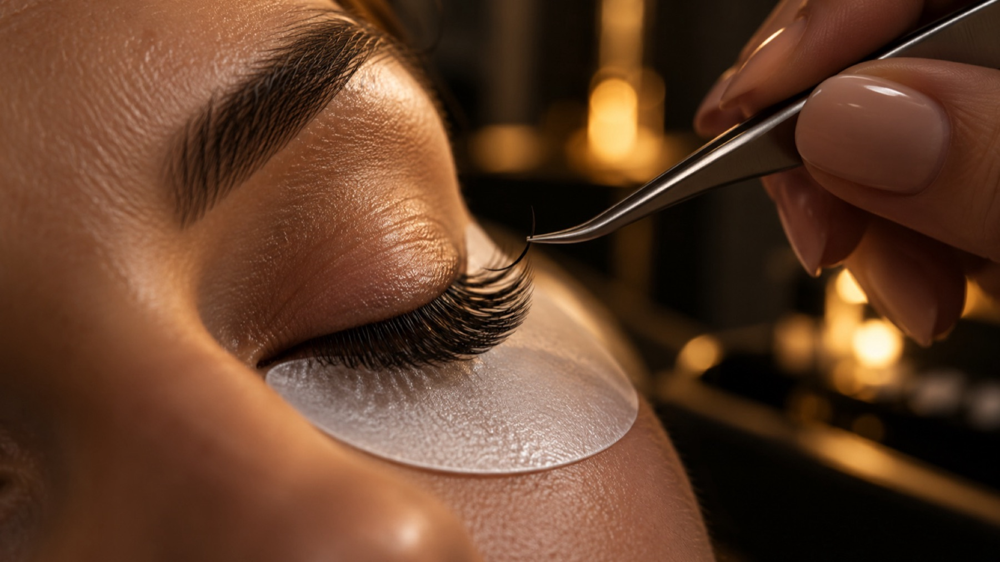
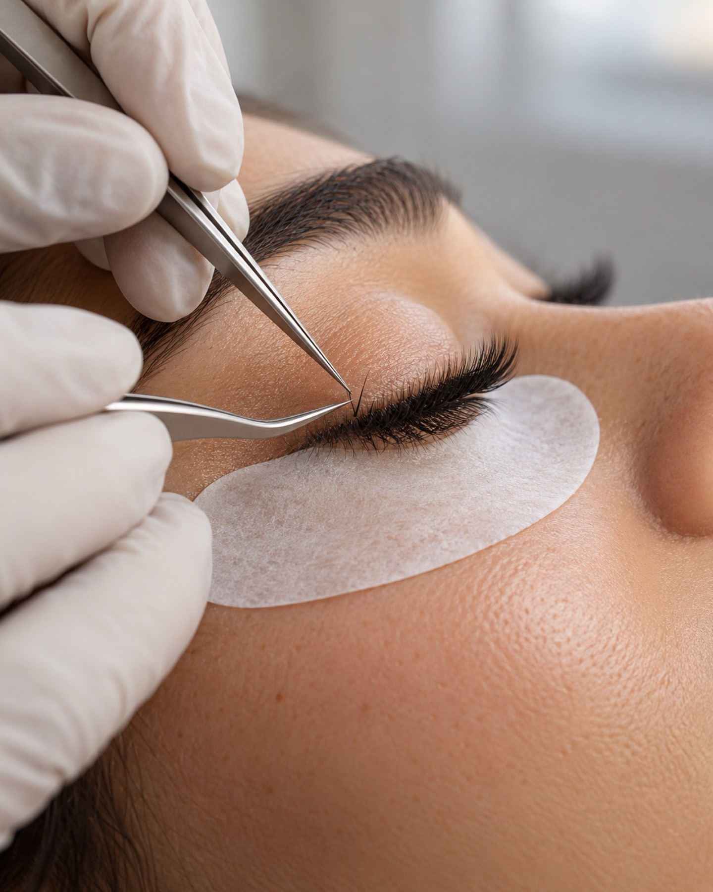
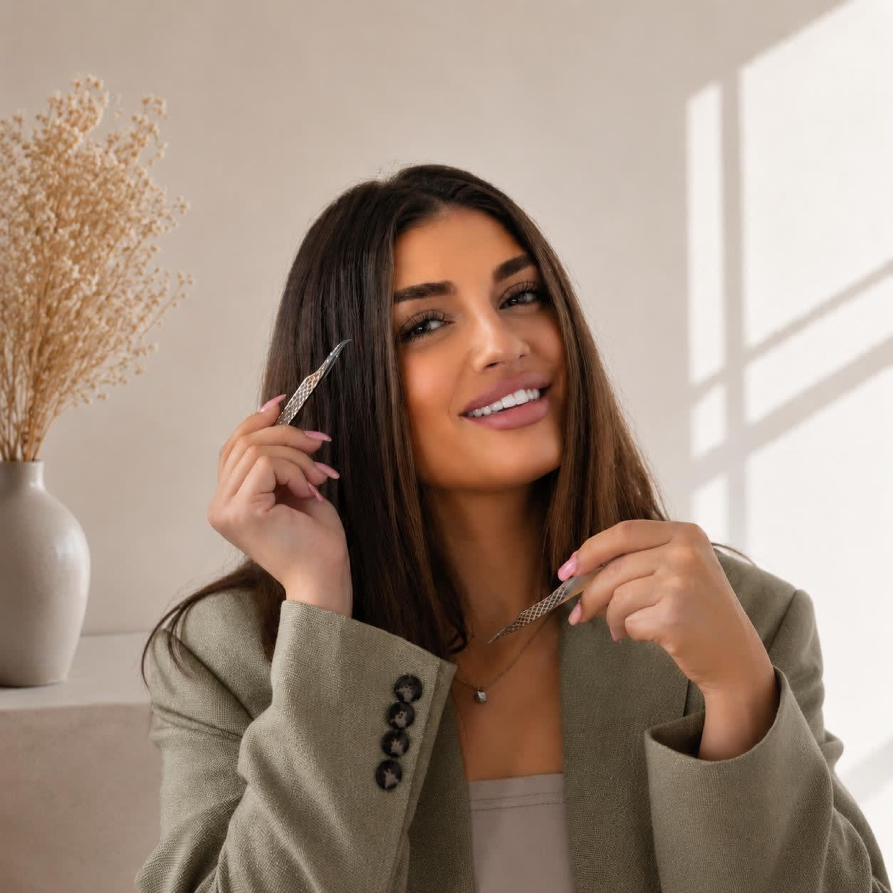
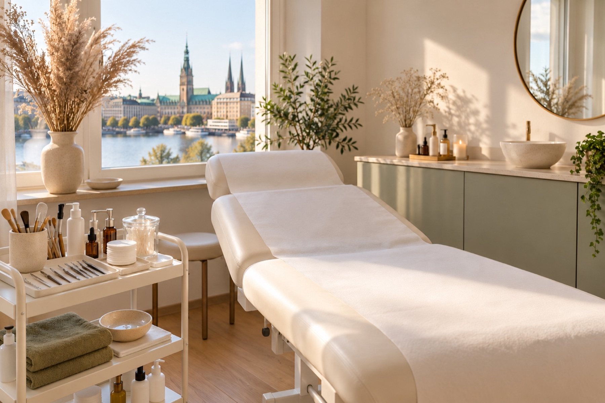

Kosmetikstudio Hamburg-Harburg
Jedes Detail ein Ritual.
Wimpern, Brauen und Haut in Hamburg-Harburg, mit Zeit, Ruhe und ganzer Aufmerksamkeit.

Leistungen
Acht Behandlungen, ein Anspruch.
- 01
Microneedling
Anti-Aging mit großer Ausreinigung und intensiver Einarbeitung von Hyaluron und Vitamin C.
- 02
Wimpernlifting
Lashlifting inklusive Färben: ein geschwungener Blick mit Ihren eigenen Wimpern.
- 03
Wimpernverlängerung
Natur Look, Mascara Look oder Volumen Look, Wimper für Wimper gesetzt.
- 04
Make-up und Visagistik
Für den Alltag und für große Anlässe, abgestimmt auf Ihren Typ.
- 05
Browlifting und Brow Lamination
Browlifting inklusive Färben, dazu Zupfen und Fadentechnik für eine klare Form.
- 06
Peelings
BioRePeel und Fruchtsäure für ein frisches, ebenmäßiges Hautbild.
- 07
Anti-Aging und Hautverjüngung
Pflegende Behandlungen für reifere Haut, auch Hyaluron ohne Nadel.
- 08
Individuelle Gesichtsbehandlungen
Porentiefenreinigung oder klassische Tiefenreinigung mit Peeling, Maske und Abschlusspflege.

Über Tülin Yilmaz
Handwerk mit Haltung.
Tülin Yilmaz ist Fachkosmetikerin, Visagistin, Wimpernstylistin und Schulungs-Trainerin. In ihrem Studio im Hinterhof der Neuen Straße nimmt sie sich für jede Kundin Zeit: erst zuhören und genau hinsehen, dann behandeln.
Ihr Wissen gibt sie auch weiter, in der Beauty Paradise Academy.
Zur AcademyAblauf Ihres Termins
In drei Schritten zum Ergebnis.
- I
Beratung und Hautcheck
Wir sprechen über Ihren Wunsch und betrachten Haut, Wimpern oder Brauen genau.
- II
Behandlung
Ruhig, sauber und Schritt für Schritt, mit der Zeit, die es braucht.
- III
Nachpflege
Sie erfahren, wie Sie das Ergebnis pflegen und wann ein Auffüllen sinnvoll ist.
Ergebnisse
Details, die bleiben.

Ich fühle mich bei Tülin von der ersten Minute an gut aufgehoben. Sie nimmt sich Zeit, erklärt alles und meine Wimpern sehen richtig natürlich aus.
Das Studio ist ruhig und sauber. Nach dem Microneedling hat sie mir genau erklärt, wie ich meine Haut in den nächsten Tagen pflegen soll.
Schulungen und Kurse
Beauty Paradise Academy.
Neben unseren Behandlungen bieten wir fundierte Schulungen im Bereich Kosmetik an. Ob Einsteigerin oder Fortgeschrittene, bei uns erhalten Sie praxisnahe Ausbildung auf höchstem Niveau.
- Wimpernverlängerung Grundausbildung Natur (8 Std.)
- Wimpernverlängerung Fortgeschritten Volumen
- Perfektionstraining Natur und Volumen
- Lashlifting oder Browlifting
Alle Behandlungen sowie die Schulungen können Sie bequem mit Klarna in Raten bezahlen.
Häufige Fragen
Gut vorbereitet.
Wie bereite ich mich vor?
Kommen Sie am besten ungeschminkt im Augenbereich und ohne Kontaktlinsen, wenn wir an Wimpern oder Brauen arbeiten. Bei Gesichtsbehandlungen genügt eine frisch gereinigte Haut. Fragen bringen Sie gern mit.
Wie lange dauert ein Termin?
Das hängt von der Behandlung ab. Eine Wimpernverlängerung im Natur Look dauert zum Beispiel 1 Std. 15 Min., ein Lashlifting inklusive Färben 1 Std. Bei allen anderen Behandlungen nennen wir Ihnen die Dauer bei der Terminvereinbarung.
Was muss ich nach der Behandlung beachten?
Das besprechen wir am Ende jedes Termins persönlich. Grundsätzlich gilt: Haut und Wimpern in den ersten Tagen schonen, Sonne meiden und mild pflegen.
Was gilt, wenn ich einen Termin absagen muss?
Geben Sie uns bitte so früh wie möglich Bescheid, telefonisch oder per Nachricht, damit wir den Termin neu vergeben können.
Kontakt und Anfahrt
Sie finden uns im Hinterhof.
AdresseTülin’s Beauty ParadiseNeue Str. 17, 21073 Hamburg
- Montag12:00 – 17:00
- Dienstag12:00 – 17:00
- Mittwoch12:00 – 17:00
- DonnerstagGeschlossen
- Freitag12:00 – 17:00
- SamstagGeschlossen
- SonntagGeschlossen